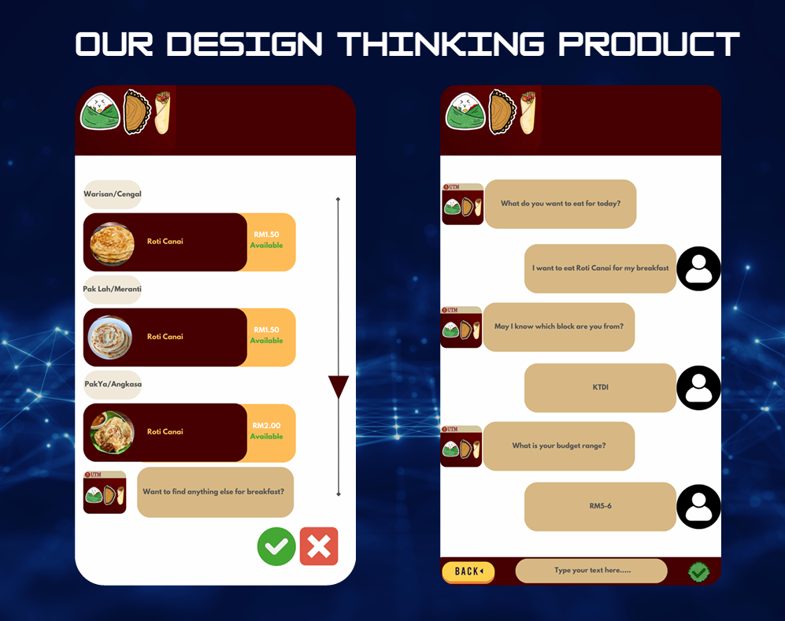

The ADi project focuses on enhancing the dining experience for UTM students and staff. It features a comprehensive app prototype that includes personalized meal recommendations, online ordering, and food tracking. The project employs AI to assist restaurant managers, riders, and customers, making it a seamless ecosystem for dining. Additionally, the project tackles common user pain points like unclear restaurant hours, lack of menus, and navigation difficulties.
 View Full PDF